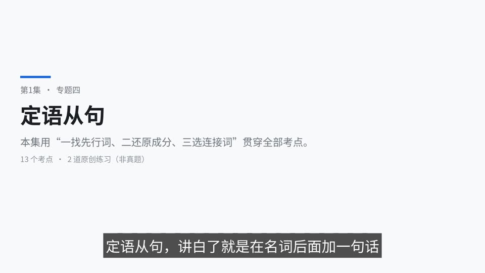
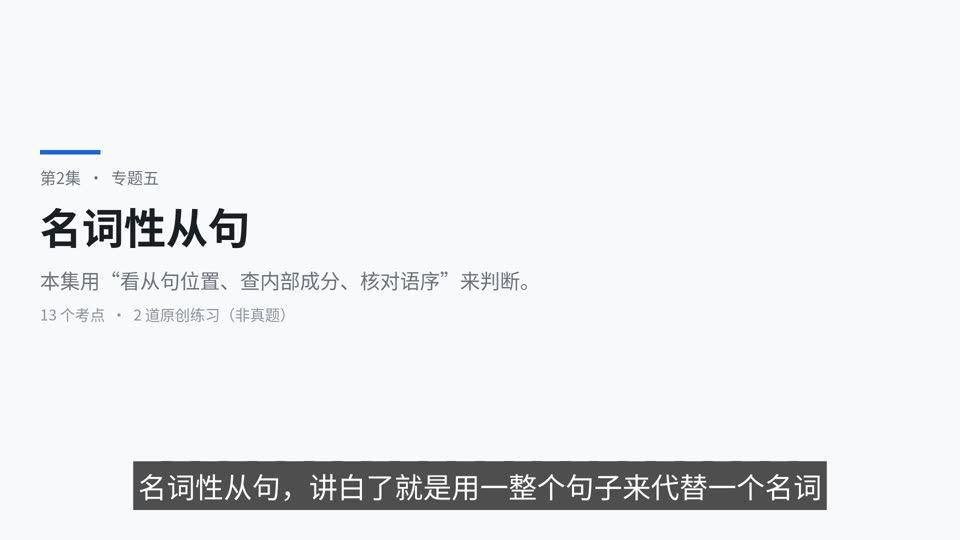
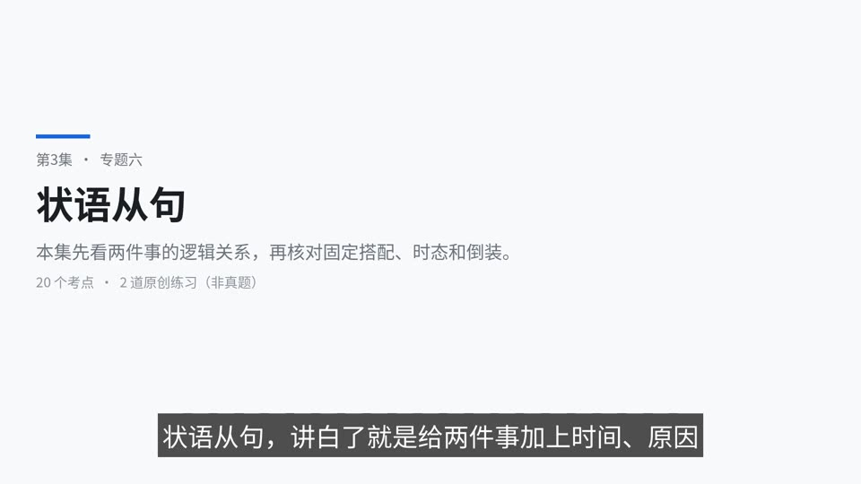
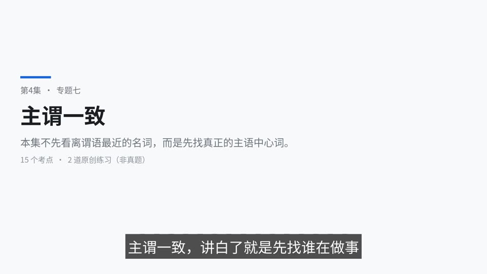
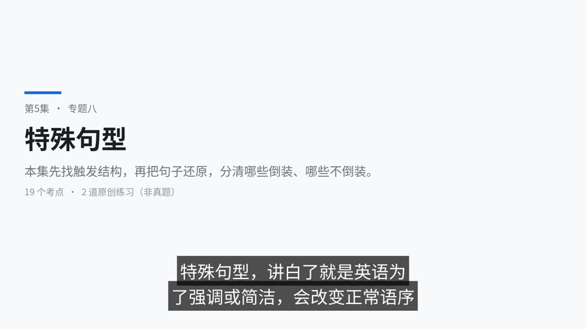

01
The nurse ___ helped my grandmother was very kind.
答案 B
who 指人且在从句中作 helped 的主语。is working、has been done 整体）；不要把 to do / doing / done 单独算成谓语。
规则：定语从句是修饰名词或代词的从句，通常位于被修饰词（先行词）之后；关系词连接主从句，并在从句里担任某种成分，或代表相应的时间、地点、原因等状语。常译成“……的”。
判断方法：① 找先行词；② 找关系词及从句边界；③ 把先行词代回从句检查是否缺主语、宾语、定语或状语（底稿口诀：一找、二还、三连接）。
限定与非限定：限定性从句没有隔开先行词的逗号，决定究竟指哪一个；非限定性从句有逗号，补充信息，关系词不能用 that，也一般不能省略。
He is an old man who is wearing a blue suit. 他是一位穿着蓝色西装的老人。先行词为 an old man（底稿简写 old man），who 在从句中作主语。The students who study hard often improve quickly. 努力学习的学生通常进步很快。My brother, who lives in Dalian, is a teacher. 我哥哥住在大连，他是一名教师（补充说明）。易错点：句中出现两个动词不一定就是两个从句；先判断是否有非谓语。逗号也不能随意删除——可能改变句意。
| 关系词 | 先行词 | 在从句中常作 | 典型判断 |
|---|---|---|---|
who |
人 | 主语；口语亦可宾语 | who works、who I met |
whom |
人 | 宾语（较正式） | whom I met；介词前置后用 whom |
which |
物/事 | 主语、宾语；非限定时可指前述整句 | which works、which I like |
that |
人或物 | 限定性定从中的主语、宾语 | 不能置于介词后；不能引导非限定性定从 |
whose |
人或物 | 所有格定语，后面通常接名词 | whose father、whose roof |
判断方法：若从句动词前没有主语，要选能作主语的 who/which/that；若动词已有主语但及物动词缺宾语，用能作宾语的 whom/who/which/that；名词前缺“谁的/哪个的”用 whose。
The young man (whom/that) I met on campus yesterday is from the UK. 昨天我在校园里遇见的那位年轻人来自英国。The girl whose mother is a doctor is my friend. 母亲是医生的那个女孩是我的朋友。The house whose windows face south is ours. 窗户朝南的那栋房子是我们的。易错点：who 在一般英语也能作宾语，whom 更正式；绝不是“宾语只能用 whom”。whose 不仅修饰人，也能修饰物。
规则：when 作时间状语（可对应 at/on/in/during + which）；where 作地点或抽象地点状语（可对应合适介词＋which）；why 修饰原因 reason，常对应 for which。
判断方法：把先行词放回从句：能写成 work **in** the factory＝地点状语，考虑 where/in which；能写成 like **the factory**＝宾语，考虑 which/that。
This is the factory which/that I like. 这是我喜欢的工厂（like 缺宾语）。This is the factory where I worked. 这是我曾工作过的工厂（worked 后缺地点状语）。I remember the day when we first met. 我记得我们第一次见面的那一天。Tell me the reason why you were late. 告诉我你迟到的原因。This is the place which we visited yesterday. 这是我们昨天参观的地方（visited 缺宾语，不能仅因为 place 就选 where）。易错点：time/place/reason 不是自动对应 when/where/why；缺成分优先于先行词意义。when 也不必一律等于 in which，介词必须由原句搭配决定。
规则：介词置于关系词之前时，人用 whom，物用 which，不可用 that/who：the person to whom I spoke。口语中介词常留在从句末：the person (who/whom/that) I spoke to。
判断方法：① 看动词或名词固定搭配（depend on、talk to、the key to）；② 看时间/地点是否需 on/in/at 等；③ 确定介词位置。
The village which my grandfather grew up in… 我的祖父长大的那个村庄……（这是底稿的未完句片段，不当作完整英文句）。This is the village which my grandfather grew up in. 这是我祖父长大的村庄。This is the village in which my grandfather grew up. 这是我祖父长大的村庄。This is the village where my grandfather grew up. 这是我祖父长大的村庄。The young man (whom/that) I met on campus yesterday is from the UK. 昨天我在校园遇见的年轻人来自英国。The friend with whom I traveled is from Shenyang. 和我一起旅行的朋友来自沈阳。介词选择小表：at 13:51（具体时刻）、on Saturday（某日）、in 2026（年月等较长时间）；in Beijing、at home。这只是常用搭配，不是判断介词的唯一依据；还要看 on the day、during the week、by the time 等固定用法。
易错点：grew up in 已保留 in 时，不能再用 where 重复地点状语。which 可作介词宾语：which ... in；where 本身已经表达地点关系。底稿口诀“介词在前的，that 不能要；介词留后面，that 随便用”仅用于其他条件允许 that 的限定性从句。
规则：限定性定从里，作宾语的 that/which/who/whom 通常可省：The film (that) we saw was interesting.；作主语时不能直接省：The boy who won the race is my classmate.。
判断方法：关系词后如果已经有完整主语，如 I met，往往是宾语空位；如果后面直接是谓语，如 is wearing，通常缺主语，不可省。
The book (which/that) she bought is expensive. 她买的那本书很贵。The book which belongs to her is expensive. 属于她的那本书很贵（which 作主语不可省）。易错点：非限定性定从的关系代词一般不能省；preposition + whom/which 的关系代词也不能省（to whom 不能只剩 to 且仍放在关系词位置）。
底稿规则：先行词为 all/everything/nothing/anything 等不定代词或受到 all 等修饰；先行词被序数词、最高级、the only/the very 修饰；先行词既有人又有物；句首已有 who/which 时为避免重复。
判断方法：先确定是限定性从句且空处作主/宾语，再检查上述信号，此类考试习惯优先用 that。
I've read all the books that you gave me. 你给我的书我都读过了。the teachers and schools that he had visited 他参观过的教师和学校（仅为名词短语）。Who is the person that is standing at the gate? 站在门口的那个人是谁？This is the first book that I read in English. 这是我读的第一本英文书。This is the most useful method that I have learned. 这是我学过最实用的方法。易错点：底稿“只能用 that”是传统应试归纳，不是所有语境的绝对语言学禁令；例如有些最高级结构也会出现 which。正式考题若 that、which 同时可接受且无附加限制，应避免强行认定唯一正确，需依题目语境及选项作答。
规则：非限定性定语从句可用 who/whom/which/whose/when/where 等，不用 that；介词置于关系代词前时，of which / to whom 正确，of that / to that 不作标准关系结构。
Football, which is a popular game, is played all over the world. 足球是一项受欢迎的运动，在世界各地都有人踢。He failed in the exam, which made his father angry. 他考试没通过，这使他的父亲很生气（which 指代前面整件事）。I met Ms. Li, who taught me English. 我遇见了李老师，她曾教过我英语。易错点：指整句话时，which 可引导后置非限定性从句；as 也可指整句，但位置和语义不同（见下一节）。
规则：as 常有“正如”之意，置于句首、句中或句尾的非限定性从句；which 指代前述整件事的非限定性从句通常跟在相关内容后。such ... as ...、the same ... as ... 可形成定从关联结构。
判断方法：看有没有 the same/such/as/so 等固定结构，或整句能否译成“正如……所知道/所预料的”。
as we all know / as is known to all 众所周知；as far as I know 据我所知；as far as I'm concerned 就我而言。as we expect / see / think / suppose 正如我们预期/看到/认为/推测；时态可变化，如 as we expected / as we had expected。as is often the case 情况常常如此；it is often the case that ... 情况常常是……。I want to use the same dictionary as was used yesterday. 我想用昨天用过的那种/同一本词典（具体所指结合上下文）。底稿标“→ D”，但未提供完整选项，不据此还原试卷。As we all know, practice is important. 众所周知，练习很重要。She was late, which surprised us. 她迟到了，这使我们吃惊。Such books as are useful should be kept. 有用的那类书应当保留。易错点：such as 单独作“例如”时不是定语从句关系词结构；as far as I know 是表达范围的固定短语，并非每次出现都算定从；the same...that 可侧重“同一个”，the same...as 可侧重“同类”，不能无条件认为 as 永远唯一正确。
规则：whose + 名词 表所属：a woman whose son is abroad；可以用于人也可以用于物。较正式的物体结构可写成 the roof of which 或 of which the roof 等，改写时必须保证整句结构成立。
Tom's book 汤姆的书；Bank of China 中国银行；the key to the house 房子的钥匙。A of B = B 的 A；A of B of C = C 的 B 的 A（这是辅助汉语理解的结构，不是所有介词 of 都可逐层反译）。whose father = the father of whom（作为所属意义提示；单独替换时应连同介词、句序一起改写）。The student whose phone was lost called the teacher. 手机丢失的那个学生联系了老师。易错点：the key to the door 用 to，不是所有“的”都对应 of；不能单看中文“的”就选 whose，须看后面有没有名词且从句缺所有格定语。
规则：one of + 复数名词 + who/that + 复数谓语：关系词通常指复数名词；the only one of + 复数名词 + who/that + 单数谓语：通常指 the only one。
Mulan is one of the best films ___ left a deep impression on me. A which has B which have C that have D that has → C（按课堂考试规则：best 后优先 that，先行词 films 为复数，用 have）。《花木兰》是给我留下深刻印象的最好电影之一。She is one of the students who work hard. 她是努力学习的学生之一。She is the only one of the students who works hard. 她是这些学生中唯一努力学习的一个。易错点：one of 主句谓语通常为单数（One of the books is missing.），但从句谓语要看关系词真正代替的对象；不要混成一个规则。题目还可能另外考时态。
规则：the way 表方式且从句缺方式状语时，常用 in which / that / 省略；case/situation/point/stage 表抽象情境或阶段且从句缺相应状语时常用 where/in which。若从句缺宾语，仍选关系代词。
the way 作先行词：in which、that、省略；the case / situation 用 where；case = box 盒子；pencil case 铅笔盒。I like the way (that/in which) she explains grammar. 我喜欢她讲解语法的方式。This is a situation where patience matters. 这是一种耐心很重要的情形。This is the way (that/which) she recommended. 这就是她推荐的方法（recommended 缺宾语，不能用 in which）。易错点：只凭 the way 就永远选 in which 会失误；where 不必对应物理地点，但应表达抽象“在……情况下”。
规则：插入语不占用关系词本应承担的从句成分。做题时可以暂时删去插入语，还原剩余结构检查是否缺主语或宾语。
The scholar has made another breakthrough, ___ of great value to the progress of science and technology. A I think which is B which I think it is C which I think is D about which I think it is → C。那位学者取得了又一项突破，我认为这对科学技术进步很有价值。This is the method that I think works best. 这就是我认为最有效的方法。易错点：which 若已作后面 is 的主语，就不能再添 it；I think 只是插入说明，不可代替缺失的语法成分。
规则：非限定从句常见 some of whom / many of which / both of which / one of which 等，whom 指人、which 指物；先行词与关系词之间也可能插入介词短语，不能简单当作“紧邻关系词的名词就是先行词”。
I have three classmates, two of whom live nearby. 我有三个同学，其中两个住在附近。She bought two books, both of which were useful. 她买了两本书，两本都很有用。易错点：two of them 若另起一个完整分句，一般需要连词或分号；, 连接非限定关系从句须用 two of whom/which。
| 英文 | 音标 IPA | 中文释义 |
|---|---|---|
| antecedent | /ˌæntɪˈsiːdənt/ | |
| relative clause | /ˈrelətɪv klɔːz/ | |
| relative pronoun | /ˈrelətɪv ˈprəʊnaʊn/ | |
| relative adverb | /ˈrelətɪv ˈædvɜːb/ | |
| restrictive | /rɪˈstrɪktɪv/ | |
| non-restrictive | /ˌnɒn rɪˈstrɪktɪv/ | |
| modify | /ˈmɒdɪfaɪ/ | |
| clause | /klɔːz/ | |
| sentence | /ˈsentəns/ | |
| subject | /ˈsʌbdʒɪkt/ | |
| object | /ˈɒbdʒɪkt/ | |
| preposition | /ˌprepəˈzɪʃən/ | |
| omit | /əˈmɪt/ | |
| whose | /huːz/ | |
| whom | /huːm/ | |
| village | /ˈvɪlɪdʒ/ | |
| factory | /ˈfæktəri/ | |
| campus | /ˈkæmpəs/ | |
| gate | /ɡeɪt/ | |
| hire | /ˈhaɪə/ | |
| airport | /ˈeəpɔːt/ | |
| suit | /suːt/ | |
| dictionary | /ˈdɪkʃənəri/ | |
| scholar | /ˈskɒlə/ | |
| breakthrough | /ˈbreɪkθruː/ | |
| impression | /ɪmˈpreʃən/ | |
| progress | /ˈprəʊɡres/ | |
| technology | /tekˈnɒlədʒi/ | |
| situation | /ˌsɪtʃuˈeɪʃən/ | |
| case | /keɪs/ | |
| suppose | /səˈpəʊz/ | |
| as we all know | /æz wiː ɔːl nəʊ/ | |
| as is known to all | /æz ɪz nəʊn tə ɔːl/ | |
| as far as I know | /æz fɑːr æz aɪ nəʊ/ | |
| as far as I'm concerned | /æz fɑːr æz aɪm kənˈsɜːnd/ | |
| as is often the case | /æz ɪz ˈɒfən ðə keɪs/ | |
| leave an impression on | /liːv ən ɪmˈpreʃən ɒn/ | |
| grow up | /ɡrəʊ ʌp/ | |
| be of great value | /biː əv ɡreɪt ˈvæljuː/ | |
| in which | /ɪn wɪtʃ/ | |
| the same ... as | /ðə seɪm ... æz/ | |
| such ... as | /sʌtʃ ... æz/ | |
| some of whom | /sʌm əv huːm/ |
说明：以下题目本讲义新编，非课堂原题、非辽宁专升本历年真题；单选每题只有一个最佳选项。
who 指人且在从句中作 helped 的主语。bought 缺宾语，指物的关系代词用 which。we talked under the stars 结构完整，缺时间状语用 when。visited 是及物动词，缺宾语而非地点状语。whose + daughter 表示“陈先生的女儿”，非限定性也可用。speech 前缺所属定语，且非限定性不用 that。in 前置，指物只能用 which。kept 的宾语，指承诺用 which。who 指复数 players，一般现在时用 train。the way 表方式且从句结构完整，可用 in which。| 题号 | 答案 | 一句话解析 |
|---|---|---|
| 1 | B | who 指人且在从句中作 helped 的主语。 |
| 2 | C | bought 缺宾语，指物的关系代词用 which。 |
| 3 | A | we talked under the stars 结构完整，缺时间状语用 when。 |
| 4 | D | visited 是及物动词，缺宾语而非地点状语。 |
| 5 | B | whose + daughter 表示“陈先生的女儿”，非限定性也可用。 |
| 6 | C | speech 前缺所属定语，且非限定性不用 that。 |
| 7 | D | 介词 in 前置，指物只能用 which。 |
| 8 | A | 逗号后非限定性定从缺 kept 的宾语，指承诺用 which。 |
| 9 | B | who 指复数 players，一般现在时用 train。 |
| 10 | C | the way 表方式且从句结构完整，可用 in which。 |

规则：一个从句在全句中充当主语、宾语、表语、同位语，分别叫主语从句、宾语从句、表语从句、同位语从句；其功能相当于一个名词性成分。底稿口诀：一找（从句位置）、三连接（看从句所缺成分）。
| 类型 | 常见位置 | 识别提示 | 例句（补充） |
|---|---|---|---|
| 主语从句 | 句首、或形式主语 it 后 |
整个从句回答“什么使……？” | What she needs is time. 她需要的是时间。 |
| 宾语从句 | 及物动词后、部分介词后 | 整个从句是“知道/问/解释的内容” | I know that he is honest. 我知道他很诚实。 |
| 表语从句 | be/seem/remain 等系动词后 |
解释主语“是什么/怎么样” | The problem is whether we can leave. 问题是我们能否离开。 |
| 同位语从句 | fact/news/idea/question 等抽象名词后 |
解释这个名词具体内容 | The fact that she succeeded encouraged us. 她成功这一事实鼓舞了我们。 |
What doesn't kill you makes you stronger. 不能击垮你的东西会让你更强大。He has told me that he will go to Shanghai tomorrow. 他已经告诉我，他明天将去上海。It is … + 从句 是识别后置主语从句的常见形式；tell / ask / give / show / buy + 人 + ... 可出现双宾语，但并非每个动词后都自然接 that 从句。判断方法：先找主句谓语，再看空缺的句子成分；只数“两个谓语”只是入门近似，嵌套从句可有三个及以上谓语。
易错点：不能将 He buys me books.（双宾语简单句）本身叫作名词性从句；也不能仅凭“从句前有一个名词”就认定是定语从句。
| 类别 | 连接词 | 是否在从句内部充当成分 | 常见含义 |
|---|---|---|---|
| 陈述内容 | that |
不充当成分 | ……这件事／无实义 |
| 是/否 | whether, if |
不充当成分 | 是否 |
| 指人 | who, whom |
主语、宾语等 | 谁 |
| 指物/事情 | what |
主语、宾语、表语等 | 什么／……的事物 |
| 选择范围 | which |
主语、宾语、定语等 | 哪一个／哪些 |
| 所属 | whose |
定语 | 谁的 |
| 时间地点原因方式 | when, where, why, how |
状语 | 什么时候／哪里／为什么／怎样 |
| 任指/让步意义 | whoever, whatever, whichever, whenever, wherever, however |
根据词性作相应成分或状语 | 无论谁、无论什么、无论何时等 |
判断方法：
who/whom，缺事物选 what，已有有限选择集可选 which，缺所属选 whose。when/where/why/how。whether/if；表达陈述事实通常选 that。-ever 含义更强，但不能机械认定“wh- 与 wh-ever 同时出现就必选 -ever”；必须结合“谁/无论谁、何时/无论何时”的句义。The scissors are what I need. 这把剪刀正是我需要的东西。What you did is right. 你做的事情是对的。She explained why she failed the maths exam. 她解释了自己为什么数学考试不及格。I wonder how he has got so much money. 我想知道他怎么得到这么多钱。【看不清】(Who/What) we went study for is a question. 这里底稿本身标记【看不清】，句法不完整，原样保留，暂不据此判断 Who/What 的答案。Whoever finishes first can choose a seat. 无论谁先完成，都可以选一个座位。I don't know who called me. 我不知道谁给我打的电话（问“是谁”，不等于“无论谁”）。易错点：名词性从句里的 what 可理解为 the thing(s) that，但定语从句一般需要外部先行词；that 不在名从内部作主/宾语，不能用它填“缺宾语”的位置。
规则：句首 That he passed the test is surprising.；句尾常由形式主语 It 占位：It is surprising that he passed the test.。常见框架：It is + 形容词 + that...；It is + 名词 + that...；It seems/appears that...。
判断方法：问全句“什么是确定/重要/难以置信的”，若答案是后面一个句子，后句可为主语从句。
___ the international conference on climate change next year is certain. A He will attend B He attends C That he will attend D As he attends → C。他明年将参加气候变化国际会议这件事是确定的。That she can finish the task is clear. 她能完成任务这一点很清楚。It is important that we keep learning. 我们持续学习很重要。Whether he agrees is unknown. 他是否同意尚不清楚。易错点：书面语中置于句首且不缺成分的主语从句通常需 that，不要无故省去；一个完整的主语从句作主语时，谓语通常用单数（但 what 引导的结构在特定复数表语语义下可能变化，见专题七）。
规则：宾语从句置于 think/say/know/believe/ask/wonder/tell/explain 等动词后；介词后也可出现 what/whether/how 等引导的名从。that 引导的普通宾语从句经常可以省略，但不是所有嵌套和固定结构都适合省略。
He has told me that he will go to Shanghai tomorrow. 他已经告诉我他明天去上海。I asked the woman at the booking office ___ I could have two tickets. A which B if C that D what → B。我问售票处的女士我是否可以买两张票。She said (that) she was busy. 她说她很忙。We talked about what we should do next. 我们谈论下一步应该做什么。Please tell me whether the library is open. 请告诉我图书馆是否开放。双宾语辨析：tell/ask/show + 人 + 从句 很常见：He told me what happened.；give/buy + 人 + 物 常见，但后面的语法结构需依动词搭配处理，例如 She gave me what I needed.（what I needed 是名词性宾语）。
易错点：动词后有 that 省略时，先找从句真正起点；介词后通常用 whether 而不是表“是否”的 if。
规则：The question/problem/truth/reason is that/whether/why/how... 等结构在系动词后引出表语从句。底稿固定表达：The reason why ... is/was that ... 表“……的原因是……”。
The reason why … is / was that … ……的原因是……。The reason why he was absent is that he was ill. 他缺席的原因是他生病了。The question is whether we have enough time. 问题是我们是否有足够的时间。This is why I called you. 这就是我给你打电话的原因。判断方法：找系动词，检查后面的句子是否解释主语内容；区分 why 表原因疑问义、because 表实际原因、that 在 reason...is that 中引出说明。
易错点：底稿将 that 解释为“在这里相当于 because”，这是帮助翻译的口诀，而不是两个词在句法上可互换；考试书面语 The reason ... is that ... 最稳妥。
规则：同位语从句解释前面抽象名词的内容，常接 fact, news, evidence, suggestion, idea, belief, hope, possibility, question, information；定语从句修饰或限定前面名词，关系代词会在定语从句内部充当成分。
| 比较 | 同位语从句 | 定语从句 |
|---|---|---|
that 是否在从句作成分 |
不作成分 | 常作主语或宾语 |
| 与前面名词关系 | 说明“事实/消息是什么” | 说明“哪个名词/怎样的名词” |
| 例子 | the news that she won 她获胜的消息 |
the news that she told me 她告诉我的那条消息 |
news 新闻、evidence 证据、suggestion 建议、fact 事实、idea 想法；另有 information 信息、secret 秘密。底稿将后一组标作“超纲词”——该判断属于底稿用语，不能据此认定官方考试实际超纲。The idea that we should start early is good. 我们应当尽早开始这个想法很好。The idea that she suggested is good. 她提出的想法很好（定从的 suggested 缺宾语）。I have no idea why he left. 我不知道他为何离开（why 解释疑问内容）。易错点：不是 news/fact/suggestion 后面就一定用 that；要看从句是否缺成分、名词后的是同位还是限定结构。suggestion that sb (should) do 涉及建议类虚拟语气，见下文扩展。
规则：作“是否”时，whether 的适用范围比 if 广。句首主语从句、介词后、whether to do、whether or not 中通常使用 whether；动词后一般可选 whether/if（具体取决于意义与搭配）。
___ will be our monitor is unknown. → 底稿给 who（从句缺主语），句意：谁将当班长还不知道。___ you will be our monitor is unknown. A that B who C whether D what → C。你是否会当我们的班长还未知。Whether she will attend is uncertain. 她是否参加尚不确定。I cannot decide whether to go. 我无法决定是否去。I am worried about whether it will rain. 我担心是否会下雨。I don't know if he will come or not. 我不知道他来不来（if ... or not 分开使用在这种宾语从句中可以成立）。判断方法：先看是否缺主/宾/状（缺就不用 whether）；再看有无“是否”的疑问；最后检查句首、介词后、to do、紧邻 or not 等位置。
易错点：底稿说“whether 与 or/or not 连用，if 不行”，应精确化：whether or not ... 可以，if or not ... 不可以；if ... or not 在一般宾语从句中可以。if 句首还可表示“如果”，不能一概说句首不出现 if。
规则：通常把特殊疑问句 Where is he? 转成宾语从句时，用 I wonder where he is.；名词性从句内通常主语在助动词/系动词之前。
What is your name? → I wonder what your name is. 你的名字是什么？→ 我想知道你的名字是什么。Where does she work? → Do you know where she works? 她在哪里工作？→ 你知道她在哪里工作吗？When will they arrive? → I don't know when they will arrive. 他们何时到？→ 我不知道他们何时到。Who came to the meeting? → I know who came to the meeting. 谁来开会了？→ 我知道谁来开会了（who 本身作主语，不要人为加倒装）。易错点：I don't know where is he. 错在从句中倒装。主句是疑问句也不改变从句的陈述语序：Could you tell me where the bank is?
规则：肯定句 doubt 常接 whether/if，否定句 don't doubt 常接 that。I don't think/believe/suppose ... 还可能用主句否定表达对宾从内容的否定（否定转移）；否定转移不等于主句动词本义被改变。
I don't doubt ___ he'll come to the cafe to see me on time. A that B when C what D whether → A。我不怀疑他会准时来咖啡馆见我。I doubt whether he knows the answer. 我怀疑他是否知道答案。I don't think he is ready. 我认为他还没准备好。易错点：doubt that 在不同语义及英语变体中也存在；练习时按肯定怀疑／否定确定的典型模式处理，不应认成绝对禁令。
规则：宾从时态由事实时间与主句视角决定。主句一般现在时不强制改变从句；过去时主句叙述过去相对时点时常出现时态后移；客观真理通常仍用一般现在时。时间状语也要保持逻辑一致。
He says that he is tired. 他说自己累了。He said that he was tired. 他说自己当时累了。The teacher said that the earth moves around the sun. 老师说地球绕太阳转。She asked me when I would arrive. 她问我那时预计什么时候到。易错点：不能机械套“主过从必过”：若陈述的事实一直有效、或时间参照仍是现在，可以有其他时态；非谓语不算从句谓语。
规则：有宾语补足语时，find/think/consider/make 等动词常用 it 作形式宾语，把较长的 that 从句或 to do 放后：I think it necessary that we should start now.。
We found it surprising that he knew the answer. 我们发现他知道答案这件事很令人意外。She showed us what she had made. 她向我们展示了她做的东西（us 间接宾语，what... 直接宾语）。易错点：it 不是由从句连接词替代，不能把 find it useful to ... 中的 it 改成 that。
规则：whoever/whatever 可以引导名词性从句，意为“任何……的人/事物”；no matter who/what 主要引导让步状语从句，通常不能直接替代名从主语或宾语。
Whoever wins will receive a prize. 无论谁获胜都会获得奖品（Whoever wins 作主语）。You can choose whatever you like. 你可以选择任何喜欢的东西（whatever you like 作宾语）。No matter who wins, we will celebrate. 不论谁赢，我们都会庆祝（让步状语从句）。易错点：No matter who wins will receive a prize 不符合上面预期的名词性主语结构。底稿“no matter + wh = wh-ever”只在同为让步状从、语义一致时通常可替换。
规则：一个句子可以同时包含多个名词性、定语、状语从句；底稿强调“主语从句 + 系动词 + 表语从句”是典型复合结构之一，但并非唯一组合。
连接词 + V1 … + V2 (is/was) … + 连接词 + V3；“核心：找系动词”；选择题可能同时出现两个连接词。What matters most is whether you keep trying. 最重要的是你是否继续尝试（What matters most 主语从句；whether you keep trying 表语从句）。I know that the student who spoke first is from Dalian. 我知道第一个发言的学生来自大连（宾语从句内含定语从句）。易错点：连接词数量不必等于从句数量（关系词省略等情况）；仍应按谓语和句子功能逐层拆解。
| 英文 | 音标 IPA | 中文释义 |
|---|---|---|
| noun clause | /naʊn klɔːz/ | |
| subject clause | /ˈsʌbdʒɪkt klɔːz/ | |
| object clause | /ˈɒbdʒɪkt klɔːz/ | |
| predicative clause | /prɪˈdɪkətɪv klɔːz/ | |
| appositive clause | /əˈpɒzətɪv klɔːz/ | |
| conjunction | /kənˈdʒʌŋkʃən/ | |
| statement | /ˈsteɪtmənt/ | |
| question | /ˈkwestʃən/ | |
| whether | /ˈweðə/ | |
| whoever | /huːˈevə/ | |
| whatever | /wɒtˈevə/ | |
| whichever | /wɪtʃˈevə/ | |
| whenever | /wenˈevə/ | |
| wherever | /weərˈevə/ | |
| however | /haʊˈevə/ | |
| wonder | /ˈwʌndə/ | |
| explain | /ɪkˈspleɪn/ | |
| doubt | /daʊt/ | |
| uncertain | /ʌnˈsɜːtn/ | |
| unknown | /ˌʌnˈnəʊn/ | |
| obvious | /ˈɒbviəs/ | |
| certain | /ˈsɜːtn/ | |
| monitor | /ˈmɒnɪtə/ | |
| scissors | /ˈsɪzəz/ | |
| evidence | /ˈevɪdəns/ | |
| suggestion | /səˈdʒestʃən/ | |
| information | /ˌɪnfəˈmeɪʃən/ | |
| fact | /fækt/ | |
| truth | /truːθ/ | |
| secret | /ˈsiːkrət/ | |
| idea | /aɪˈdɪə/ | |
| belief | /bɪˈliːf/ | |
| possibility | /ˌpɒsəˈbɪləti/ | |
| conference | /ˈkɒnfərəns/ | |
| international | /ˌɪntəˈnæʃənəl/ | |
| climate | /ˈklaɪmət/ | |
| attend | /əˈtend/ | |
| booking office | /ˈbʊkɪŋ ˈɒfɪs/ | |
| on time | /ɒn taɪm/ | |
| the reason why | /ðə ˈriːzən waɪ/ | |
| have no idea | /hæv nəʊ aɪˈdɪə/ | |
| be worried about | /biː ˈwʌrid əˈbaʊt/ | |
| decide whether to do | /dɪˈsaɪd ˈweðə tə duː/ | |
| it is certain that | /ɪt ɪz ˈsɜːtn ðæt/ | |
| as a result | /æz ə rɪˈzʌlt/ |
说明：以下题目本讲义新编，非课堂原题、非辽宁专升本历年真题。
said 缺宾语且整个 What... 充当主语。can speak three languages 成分完整，形式主语句引出陈述内容用 that。when。whether ... or not 表“是否”，该结构中用 whether。where I lived。that he refused the offer 说明 fact 的内容，that 不作成分。protect 宾语完整，介词 about 后用 how 表方式。doubt 常接 whether 表是否。Whoever。whether。| 题号 | 答案 | 一句话解析 |
|---|---|---|
| 1 | A | said 缺宾语且整个 What... 充当主语。 |
| 2 | C | can speak three languages 成分完整，形式主语句引出陈述内容用 that。 |
| 3 | B | 题干问会议开始的时间，应用 when。 |
| 4 | D | whether ... or not 表“是否”，该结构中用 whether。 |
| 5 | B | 宾从用陈述语序 where I lived。 |
| 6 | C | that he refused the offer 说明 fact 的内容，that 不作成分。 |
| 7 | A | protect 宾语完整，介词 about 后用 how 表方式。 |
| 8 | D | 肯定式 doubt 常接 whether 表是否。 |
| 9 | B | 名词性主语从句表示“无论谁”，可用 Whoever。 |
| 10 | C | 表语从句结构完整，句意为“能否”，用 whether。 |

规则：状语从句在句中说明时间、地点、原因、条件、目的、结果、让步、比较、方式等逻辑关系。底稿口诀：翻译主从句，确定连接词。
| 逻辑 | 常见引导词 | 中文信号 |
|---|---|---|
| 时间 | when, while, as, before, after, since, until, once, as soon as |
当……时；直到；一……就…… |
| 地点 | where, wherever |
在……地方；无论何处 |
| 原因 | because, since, as, now that, in that |
因为；既然 |
| 条件 | if, unless, as/so long as, provided (that), on condition that |
如果；除非；只要 |
| 目的 | so that, in order that, lest, for fear that |
为了；以防 |
| 结果 | so...that, such...that, so that |
如此……以至于；结果 |
| 让步 | although, though, even if, even though, while, as, no matter... |
虽然；即使；不管 |
| 比较 | than, as...as, not so/as...as |
比；和……一样 |
| 方式 | as, as if, as though |
按照；仿佛 |
判断方法：先把主句与从句译成两件事，再问两者是先后、因果、条件还是让步；最后核对专属搭配与时态。
易错点：when/where/why 也能引导名词性/定语从句，不能只见连接词就判状语从句。
规则：when 能指某一时点或时间段，搭配瞬间或持续动作；while 典型表示在一段持续时间内，也可表“然而/虽然”；as 常强调两个动作同步发生或逐渐变化。
Don't talk when you eat. 吃饭时不要讲话。Don't talk while you are eating. 你正在吃饭时不要讲话。Don't talk while eating. 吃饭时不要讲话（同主语时省略 you are）。When I entered, she was reading. 我进去时，她正在读书。While I was writing, the phone rang. 我写作时，电话响了。As time went by, he became more confident. 随着时间推移，他变得更自信。I like tea, while my sister prefers coffee. 我喜欢茶，而我妹妹更喜欢咖啡。易错点：底稿将 when + 一般时、while + 进行时 作为快速入门标记，不是绝对搭配：while he lived there 等一般过去时同样成立。判断应看持续性与句义，而非只看 -ing。
规则：
as soon as + 从句：一……就……；the moment / the minute / the instant + 从句：一……就……。
immediately / directly / once + 从句：一……就……（语体和用法依具体词变化）；once 也能表“一旦”。
hardly/scarcely ... when ...、no sooner ... than ...：表达“一……就……”；前一事件常用过去完成时，后一事件用一般过去时。
句首放 Hardly/Scarcely/No sooner 时，前一分句部分倒装：Hardly had + 主语 + done when + 主语 + did；No sooner had + 主语 + done than + 主语 + did。
【课堂笔记原提示】hardly/scarcely A when B、no sooner A than B（A 先、B 后）；A as soon as B 这组标有 ✗，底稿提醒前后事件顺序不可机械套用。
【补充例句】As soon as I got home, I called my mother. 我一到家就给母亲打电话（先到家，后打电话）。
【补充例句】Hardly had I sat down when the bell rang. 我刚坐下铃就响了。
【补充例句】No sooner had she finished the test than she left. 她刚做完测试就离开了。
【补充例句】The moment he saw the message, he replied. 他一看到消息就回复了。
易错点：hardly 配 when，no sooner 配 than；as soon as 句里应按从句实际表达的动作确定先后，不是“主句一定先发生”。在时间状语从句里表将来通常用一般现在时代替 will：I will call you as soon as I arrive.。
规则：before 在……之前；after 在……之后；by the time 到……时为止，主句常依据参照点选完成时；until/till 直到……为止，常与持续动作连用。
Finish your work before you leave. 离开前完成工作。After she had finished dinner, she went out. 她吃完晚饭后出去了。By the time I arrived, the meeting had started. 我到达时会议已经开始了。I waited until the rain stopped. 我一直等到雨停。易错点：by the time 不是一律过去完成时：看参照时间为过去、现在或将来。before/after 的主从句时态由事件关系决定。
规则：not...until＝直到……才……；not until... 放句首时主句部分倒装；It was not until ... that ... 是强调句，that 后不倒装。
till/until 直到……为止；not...until 直到……才；另有 from — to【存疑】（原标记保留，不能当成已确认课堂内容）。She didn't begin until the teacher arrived. 老师到达后她才开始。Not until the teacher arrived did she begin. 直到老师到达她才开始（主句倒装）。It was not until the teacher arrived that she began. 直到老师到达她才开始（强调句不倒装）。易错点：not until 后的时间从句自身不倒装；did 放在主句中，而非 until 从句里。
规则：since 表“自从”时，主句常用完成时，since 从句常用一般过去时；表“既然/因为”时引导原因状语从句。
since：① 自从＋完成时；② 因为＋状语从句。I have lived here since I graduated. 我毕业以后一直住在这里。Since you are here, let's start. 既然你来了，我们就开始吧。It is five years since we last met. 从我们上次见面至今已有五年（特殊时间表达）。易错点：不是看到 since 两边就都用完成时；若表示原因，不套“自从”的时态公式。
规则：真实条件：If + 一般现在时, 主句将来时/祈使句/情态动词；unless≈if...not（除非/如果不），要注意双重否定。if 还可引导表“是否”的宾语从句，此时不使用“主将从现”规则。
if：如果／是否；unless：如果不＝if not；if 的三种考点：真实条件、虚拟条件、名词性从句。If it rains tomorrow, we will stay home. 如果明天下雨，我们就待在家。Unless you work hard, you will not improve. 除非努力，否则你不会进步。I don't know if it will rain tomorrow. 我不知道明天是否下雨（这里 will rain 合理，因为是宾语从句）。易错点：不要把 unless 后再加否定而造成意义相反；“主将从现”也常用于 when/as soon as/until 等时间从句，但不是所有含将来事件的从句都一律禁用 will。
规则：非真实或假设条件中，时态表现为与事实距离而非单纯的过去时间：
| 假设时间 | if 从句 | 主句常见形式 | 例句（补充） |
|---|---|---|---|
| 与现在相反 | 一般过去时；be 常用 were |
would/could/might + do |
If I were you, I would apologize. 如果我是你，我会道歉。 |
| 与过去相反 | had + done |
would/could/might have + done |
If she had left earlier, she would have caught the bus. 如果她早走，就赶上车了。 |
| 与将来不大可能或假设 | were to do / should do / 一般过去时 |
would/could/might + do |
If he were to call, I would answer. 如果他打电话来，我会接。 |
判断方法：先问是假设现在、过去还是将来，再套主从句配对；混合条件句根据两个动作分别判断时间。
If I had studied harder, I would be more confident now. 如果过去学得更努力，我现在会更有信心（过去条件＋现在结果）。易错点：底稿将“虚拟——动词都是过去式”作为速记，不够完整；与过去事实相反要 had done / would have done，将来假设也可能用 should/were to。
规则：这几组通常表达“只要……/在……条件下”。真实将来条件从句通常用现在时表示将来。
as long as / so long as / on condition that 只要……。You can borrow the book as long as you return it on time. 只要按时归还，你就能借这本书。We will agree on condition that everyone follows the rules. 只要每个人遵守规则，我们就同意。You may leave early provided that you finish the task. 只要完成任务，你可以早走。易错点：as long as 还可表达“和……一样长”，要看是不是条件含义。
规则：in case 用于“以防某事发生”，常接陈述语气；lest 文体较正式，后可用 (should) + 动词原形；for fear that 表“唯恐……”，可用 might/should 等或依情境使用其他语气。
in case / lest / for fear that 以防；底稿强调 should do 和状从。Take an umbrella in case it rains. 带上伞以防下雨。He spoke quietly for fear that he might wake the baby. 他轻声说话，唯恐吵醒婴儿。She took notes lest she (should) forget the details. 她记了笔记以免忘记细节。易错点：不能说 in case 只能接虚拟 should do；in case of + 名词 与 in case + 句子 的结构不同：in case of fire 一旦起火。
规则：because 通常直接给出原因；since/as 可表示“既然/由于”，往往把原因作为对方已知或背景信息；now that 既然（情况已成事实）；in that 在于／因为某方面（较书面）。
because / since / now that / in that 因为；as 也可用于原因。结果 — 因为 — 原因；原因 — 因为【存疑】— 结果（保留原文，不据此记忆第二行的“因为”）。He stayed at home because he was ill. 因为生病，他待在家。Now that you have finished, you can rest. 既然完成了，你可以休息。The plan is useful in that it saves time. 这个方案的好处在于它节省时间。易错点：因果词并非随意互换；because 是从属连词，引出原因从句，而 because of + 名词/动名词 是介词短语。不要受汉语位置口诀束缚，仍以真实逻辑为准。
规则：so that/in order that + 完整主谓句 表目的，常与 can/could/may/might 连用；in order to/so as to + 动词原形 是不定式目的结构，不是状语从句。
in order that + 句子（主谓）；in order to + do。He got up early so that he could catch the bus. 他早起以便赶上公交车。She saved money in order to buy a computer. 她存钱是为了买电脑。They spoke slowly in order that everyone could understand. 他们说得很慢，为了让每个人都听懂。易错点：so that 还能表示结果，因此要结合上下文；in order to 后不能直接接“主语＋谓语”的完整句。
规则：so + 形容词/副词 + that + 句子；such + (a/an) + 形容词 + 名词 + that + 句子；复数/不可数名词前通常不用 a/an。特殊结构 so many/few + 复数名词、so much/little + 不可数名词。
so/such … that 如此……以至于；so that 因此（这个“因此”是理解结果的意译，不能简单拿 therefore 与句法互换）。The question was so difficult that nobody answered it. 题目如此难，以至于没人答出来。It was such a difficult question that nobody answered it. 那是一道如此难的题，以至于没人答出来。There was so little time that we couldn't finish. 时间太少，以至于我们没能完成。He studied hard, so that he passed the exam. 他努力学习，结果通过了考试（这里是结果语义）。易错点：so + adj + a/an + 单数可数名词 + that 也成立：so useful a book that...，不是所有带名词结构都只能选 such。
规则：although/though/even though 表“虽然、尽管”，强调现实或已给定事实；even if 常表“即使（假设）”；while 置句首也可表“尽管/虽然”（较书面），或表对比“然而”。
although / though / as / even if (even though) 尽管、即使、虽然；though / while。Although he was tired, he continued working. 尽管疲倦，他仍继续工作。Even if it rains, we will go. 即使下雨，我们也要去（假设）。Even though it was raining, they played football. 虽然正在下雨，他们仍踢了足球（事实）。While I agree with you, I still have a question. 虽然我同意你，但我仍有个问题。易错点：标准书面英语中通常不要在同一句简单配成 Although ..., but ...；although 本身已表示转折，让步主句可用 still/yet 等副词。
规则：让步意义的 as（有时 though）常前置表语、状语或动词原形，形成 形容词/副词/名词/动词原形 + as + 主语 + 谓语；名词单数表语前置通常去掉冠词。
As she is rich → Rich as she is 虽然她富有……（这里是结构转换片段，非完整独立句）。As he is a boy → Boy as he is 虽然他还是男孩……（前置名词去冠词）。As he runs fast → Fast as he runs 虽然他跑得快……。As he might try → Try as he might 尽管他努力尝试……。Young as she is, she has much experience. 尽管她年轻，却很有经验。Child as he is, he understands the problem. 尽管他还是孩子，他仍懂得这个问题。Hard as he tried, he couldn't lift it. 尽管他非常努力，还是举不起来。易错点：不是所有 as 都要倒装；as 表“因为/当……时/按照/和……一样”时结构不同。此类“前置”不等同于否定词前置的“助动词部分倒装”。
规则：让步状语从句中，no matter who/what/when/where/how 常可换成 whoever/whatever/whenever/wherever/however；但是在名词性主语/宾语从句中不能随意替换。
no matter + 特殊疑问词（wh）= wh + ever；no matter who = whoever（仅限对应让步状从时更准确）。No matter how hard the test is, I will try. 无论考试多难，我都会努力。Wherever you go, keep in touch. 无论走到哪里，都要保持联系。Whatever happens, don't give up. 无论发生什么，都别放弃。易错点：however + 形容词/副词 + 主语 + 谓语，如 However difficult it is, ...，不能直接把 however 当普通程度副词 very 使用。
规则：同级比较：as + 形容词/副词原级 + as；否定同级：not as/so + 原级 + as；比较级：形容词/副词比较级 + than。倍数通常放在比较结构之前：twice as large as、three times as heavy as、twice the size of。
as…as、the same…as；否定：not as/so…as、not the same…as。once / twice / 数字 + times（一次／两倍／三倍及以上，需依结构解释）。This room is twice as large as that one. 这间房的面积是那间的两倍。My bag is not as heavy as yours. 我的包没有你的重。She runs faster than I do. 她比我跑得快。The new bridge is three times the length of the old one. 新桥长度是旧桥的三倍。易错点：three times as large as 是“三倍大（总量为三倍）”，不要和 three times larger than 的不同口语解释混淆。the same...as、such...as 还可引出定语从句，不一定是普通比较状语从句。
规则：as＝按照……的方式；as if/as though＝好像、仿佛，可描述看似真实的情况，也可配虚拟语气表示与事实相反。
as if / as though 好像。Do as I told you. 按照我告诉你的做。It looks as if it is going to rain. 看起来好像要下雨了（较真实的判断）。He talks as if he knew everything. 他说起话来仿佛无所不知（与实际有距离的假设）。She looked as if she had seen a ghost. 她看上去仿佛见了鬼（对过去的非真实假设）。易错点：as if 不总是虚拟语气；要结合是否相信事件真实发生来选 is、were、had done 等。
规则：but 是并列连词，可连接两个并列分句；however 通常是连接性副词，需要标点或额外的连接方式，如 ; however,；whereas 表示“而、相比之下”可引出从句。
but / however 但是。He was tired, but he kept working. 他很累，但继续工作。He was tired; however, he kept working. 他很累，然而仍继续工作。My brother likes music, whereas I prefer sports. 我哥哥喜欢音乐，而我更喜欢运动。易错点：不要用逗号直接拼接两句独立句子形成 ..., however, ... 而无分号等合适标点；but 不是从属引导词，不能把所有带 but 的句子都叫状语从句。
规则：where 可表示“在……的地方”，wherever 表“无论哪里/任何地方”；如果前面有名词作被修饰对象，可能是定语从句，须分清。
Where there is a will, there is a way. 有志者事竟成。You may sit wherever you like. 你可以坐在任何你喜欢的地方。This is the café where we met. 这是我们见面的咖啡馆（有先行词 café，定语从句）。易错点：不能把所有 where 当地点定从；关键是整个从句修饰名词，还是充当地点状语。
| 英文 | 音标 IPA | 中文释义 |
|---|---|---|
| adverbial clause | /ədˈvɜːbiəl klɔːz/ | |
| time clause | /taɪm klɔːz/ | |
| condition | /kənˈdɪʃən/ | |
| concession | /kənˈseʃən/ | |
| purpose | /ˈpɜːpəs/ | |
| result | /rɪˈzʌlt/ | |
| contrast | /ˈkɒntrɑːst/ | |
| cause | /kɔːz/ | |
| consequence | /ˈkɒnsɪkwəns/ | |
| meanwhile | /ˈmiːnwaɪl/ | |
| gradually | /ˈɡrædʒuəli/ | |
| immediately | /ɪˈmiːdiətli/ | |
| directly | /dəˈrektli/ | |
| once | /wʌns/ | |
| hardly | /ˈhɑːdli/ | |
| scarcely | /ˈskeəsli/ | |
| sooner | /ˈsuːnə/ | |
| until | /ənˈtɪl/ | |
| unless | /ənˈles/ | |
| although | /ɔːlˈðəʊ/ | |
| though | /ðəʊ/ | |
| whereas | /weərˈæz/ | |
| however | /haʊˈevə/ | |
| nevertheless | /ˌnevəðəˈles/ | |
| otherwise | /ˈʌðəwaɪz/ | |
| therefore | /ˈðeəfɔː/ | |
| provided | /prəˈvaɪdɪd/ | |
| lest | /lest/ | |
| fear | /fɪə/ | |
| umbrella | /ʌmˈbrelə/ | |
| confidence | /ˈkɒnfɪdəns/ | |
| apologize | /əˈpɒlədʒaɪz/ | |
| graduate | /ˈɡrædʒueɪt/ | |
| follow | /ˈfɒləʊ/ | |
| environment | /ɪnˈvaɪrənmənt/ | |
| reply | /rɪˈplaɪ/ | |
| maintain | /meɪnˈteɪn/ | |
| as soon as | /æz suːn æz/ | |
| no sooner ... than | /nəʊ ˈsuːnə ... ðæn/ | |
| hardly ... when | /ˈhɑːdli ... wen/ | |
| the moment | /ðə ˈməʊmənt/ | |
| the minute | /ðə ˈmɪnɪt/ | |
| by the time | /baɪ ðə taɪm/ | |
| not ... until | /nɒt ... ənˈtɪl/ | |
| as long as | /æz lɒŋ æz/ | |
| so long as | /səʊ lɒŋ æz/ | |
| on condition that | /ɒn kənˈdɪʃən ðæt/ | |
| provided that | /prəˈvaɪdɪd ðæt/ | |
| in case | /ɪn keɪs/ | |
| in case of | /ɪn keɪs əv/ | |
| for fear that | /fə fɪə ðæt/ | |
| now that | /naʊ ðæt/ | |
| because of | /bɪˈkɒz əv/ | |
| in that | /ɪn ðæt/ | |
| in order that | /ɪn ˈɔːdə ðæt/ | |
| in order to | /ɪn ˈɔːdə tə/ | |
| so that | /səʊ ðæt/ | |
| even if | /ˈiːvən ɪf/ | |
| even though | /ˈiːvən ðəʊ/ | |
| no matter how | /nəʊ ˈmætə haʊ/ | |
| as if | /æz ɪf/ | |
| as though | /æz ðəʊ/ | |
| keep in touch | /kiːp ɪn tʌtʃ/ | |
| give up | /ɡɪv ʌp/ |
说明：以下题目本讲义新编，非课堂原题、非辽宁专升本历年真题。
when 表“我做饭时灯突然灭了”，体现持续动作中发生短动作。since 表自从，主句现在完成时和从句过去时相配。doesn't rain。in case 表以防。no sooner ... than。so + 形容词 + that，这里中心词是形容词 tired。Although。It was not until ... that ... 为强调结构，连接词用 that。three times as heavy as。but he isn't 说明与现在事实相反，as if 后可用 were。| 题号 | 答案 | 一句话解析 |
|---|---|---|
| 1 | B | when 表“我做饭时灯突然灭了”，体现持续动作中发生短动作。 |
| 2 | A | since 表自从，主句现在完成时和从句过去时相配。 |
| 3 | C | 真实条件从句表示将来，通常用一般现在时 doesn't rain。 |
| 4 | C | 带水是为防途中口渴，in case 表以防。 |
| 5 | B | 固定搭配为 no sooner ... than。 |
| 6 | B | so + 形容词 + that，这里中心词是形容词 tired。 |
| 7 | C | “虽然年轻仍写了两本小说”是让步关系，用 Although。 |
| 8 | D | It was not until ... that ... 为强调结构，连接词用 that。 |
| 9 | A | 倍数同级比较结构是 three times as heavy as。 |
| 10 | B | but he isn't 说明与现在事实相反，as if 后可用 were。 |

规则：
A student is... / Students are...。判断方法：先划主语及中心词（不是单纯看谓语前最近名词），再判断是否存在 either...or 等专属的就近规则，最后结合意义与时态。
The students are reviewing grammar. 学生们正在复习语法。The news is exciting. 这则消息令人兴奋（news 形式以 -s 结尾，作不可数名词）。易错点：主谓一致是主语与有限谓语的一致，不是见到动词就用相同形式；to learn、learning 等非谓语本身不与主语作有限谓语一致。
规则：这些关联结构连接两个主语时，有限谓语通常与离谓语最近的主语一致；there be 结构在传统学校语法里也常按最近名词处理。
Neither he nor I am wrong. 他和我都没有错。Not only I but also she is ready. 不仅我，她也准备好了。There is a book and two pens on the desk. 桌上有一本书和两支笔。Either my parents or my sister is coming. 要么我父母来，要么我妹妹来。Either my sister or my parents are coming. 要么我妹妹来，要么我父母来。There are two pens and a book on the desk. 桌上有两支笔和一本书。判断方法：把主语顺序与空格位置画出来，看离有限谓语最近的并列主语。
易错点：not only...but also 连接两个主语时考就近一致，连接两个谓语/宾语时规则不同；there be 在自然英语也可能因语体出现差异，考试宜采用明确的学校语法形式。
规则：with, as well as, together with, along with, besides, except, including, rather than, accompanied by 等短语通常是附加说明，不与前面中心主语一起构成 and 式复数主语。
Tom, together with his friends, is here. 汤姆和朋友们都在这里。She, rather than her brothers, is responsible. 负责的是她而不是她的兄弟们。The teacher, as well as the students, is excited. 老师和学生们都很兴奋。The books, along with a notebook, are on the desk. 书和一本笔记本在桌上。判断方法：临时划掉 , together with ... , 等附加成分，只看剩下主语单复数。
易错点：Tom and his friends are... 与 Tom, with his friends, is... 不是一回事；along with、as well as 不等于 and。
规则：A and B 表两个人/两件事一般谓语复数；若两种身份指同一人、两部分构成一个概念或同一整体，可用单数。冠词重复可能帮助判断，但仍取决于语义。
The teacher and writer is speaking. 那位兼作作家的老师正在讲话。The teacher and the writer are speaking. 那位老师和那位作家正在讲话。Bread and butter is my usual breakfast. 黄油面包是我常吃的早餐（作为一种组合食物）。My brother and my sister are at home. 我的哥哥和妹妹都在家。易错点：冠词可辅助，但不能把“有一个 the 就必定同一人”机械用于所有表达；and 连接两个独立动名词有时强调两件事，谓语可复数。
规则：each/every/either/neither + 单数名词 通常单数；everyone, everybody, someone, somebody, anyone, anything, nothing, each, either, neither 单独作主语通常单数；every A and every B 通常单数。
Every boy and every girl has a book. 每个男生、女生都有一本书。The students each have a book. 学生们各有一本书。Each of the students has a notebook. 每个学生都有笔记本。Nobody knows the answer. 没有人知道答案。Either of the methods works. 两种方法中的任何一种都行。判断方法：辨别 each 是句子真正主语（Each has）还是复数主语后的同位成分（Students each have）。
易错点：every A and every B 虽有 and，在强调“每一个”的情况下仍用单数；both 则通常搭配复数。
规则：a number of + 可数名词复数＝许多，谓语复数；the number of + 可数名词复数＝……的数量，谓语单数。a great deal of + 不可数名词、a large amount of + 不可数名词 通常按不可数整体用单数；large amounts of + 不可数名词 可按复数 amounts 选复数。
A number of students are absent. 许多学生缺席。The number of students is increasing. 学生人数正在增长。A great deal of water has been wasted. 很多水被浪费了。Large amounts of money have been spent. 大量金钱已经被花掉。易错点：不要让 the number of students 里的 students 误导主句谓语；它的中心词是单数 number。
规则：fraction/percentage + of + 名词 谓语通常与 of 后所指对象一致；some/most/all/half/plenty of/a lot of/lots of 等也常根据 of 后是复数名词还是不可数名词决定。
Two thirds of the water is clean. 三分之二的水是干净的。Sixty percent of the students are girls. 百分之六十的学生是女生。Half of the cake is gone. 蛋糕的一半没了。Half of the apples are red. 一半苹果是红色的。Most of the information is useful. 大部分信息有用。易错点：百分数本身是否大于一不决定谓语单复数；information/advice/furniture/equipment 为不可数名词，不能按汉语含义强行用复数形式。
规则：当表示一个时间段、价格、距离、重量等整体数量时，即便数量词为复数，谓语通常单数；若强调多个个体单位，则可依语境使用复数。
Ten years is a long time. 十年是一段很长的时间。Twenty dollars is enough. 二十美元足够了。Five miles is a long way. 五英里是很长的一段路。Three hours is enough for the journey. 三小时旅程时间足够。The first three hours were difficult. 最初的三个小时很难熬（强调三个时段）。易错点：不是所有复数时间单位都要选 is，要看主语是抽象总量还是可分的多个时段。
规则：family, class, team, committee, audience, group 若视为一个整体常用单数；若强调成员各自行动，英式英语常用复数。police, cattle, people（人们） 通常当复数；a people 可表示一个民族。
My family is a large one. 我家是个大家庭。My family are discussing their plans. 我的家人正在讨论各自的计划。The class is small. 这个班规模小。The class are taking their seats. 同学们正在各自就座。The police are investigating. 警方正在调查。People are waiting. 人们正在等候。The cattle are grazing. 牛群正在吃草。易错点：police 指警方时通常是复数主语；a police officer is 指单个警察。美式英语对部分集合名词更倾向于整体单数，应尊重具体句意。
规则：the + 形容词 指某类人时常按复数：the young, the old, the rich, the poor；若表示抽象概念可用单数。部分以 -s 结尾的词实际是不可数或单数学科名词：news, mathematics, physics。
The young are full of hope. 年轻人充满希望。the unknown（未知事物）不能机械按“指一类人”套复数。The poor need help. 穷人需要帮助。Physics is difficult for some students. 物理对一些学生来说很难。The United States is a large country. 美国是一个大国（整体国家名作单数）。易错点：news 的 -s 并不表示可数复数；the rich 指“富人们”时通常复数，而不是一个单数名词。
规则：单个 doing、to do 或一个主语从句作为概念整体时，主句谓语通常单数；以 what 引导的主语从句与复数表语结合时，可按意义用复数。
Reading is useful. 阅读很有用。To learn English takes time. 学英语需要时间。What he said is true. 他说的是真的。What we need are books. 我们需要的是书（表语 books 为复数的特殊意义一致结构）。Swimming and running are my favorite activities. 游泳和跑步是我最喜欢的两项活动（两个独立活动）。易错点：不要把 what 开头的句子都视为复数；一般先从整体单数入手，再看表达是否突出多个具体事物。
规则：定语从句谓语取决于关系词指向的先行词；one of the + 复数名词 + who 通常从句复数；the only one of ... who 通常从句单数。
He is one of the students who work hard. 他是努力学习的学生之一。He is the only one of the students who works hard. 他是这些学生中唯一努力学习的一个。The students who live in the dormitory are friendly. 住在宿舍的学生很友好。易错点：主句 He is... 的 is 不决定定从的 work/works；先锁定 who 指向 students 还是 the only one。
规则：many a + 单数名词、more than one + 单数名词 在学校语法中常配单数；one and a half + 复数名词 常用复数；a pair of + 复数形式名词 谓语看 pair，two pairs of... 看 pairs。
Many a student has made this mistake. 许多学生都犯过这个错误。More than one person has asked this question. 不止一人问过这个问题。One and a half hours have passed. 一个半小时过去了（这里 hours 作计时单位并非单一总量谓语的唯一可能；也可用其他整体化结构）。A pair of scissors is on the table. 一把剪刀在桌上。Two pairs of shoes are missing. 两双鞋不见了。易错点：more than one 常配单数，不能因中文“多于一人”就选复数；pair 是中心词，不是 scissors。
规则：both 指两者都，作主语通常复数；neither 单独指两者都不，正式语法常用单数；none of + 复数名词 可用单数或复数（因语义、文体而异）；all of 根据指代是否可数复数或不可数整体判断。
Both of the answers are correct. 两个答案都正确。Neither of the answers is correct. 两个答案都不正确。None of the money is missing. 钱一点也没少。None of the students are absent. 没有学生缺席（现代英语自然用法；is 在某些语境也可见，故不宜出成无语境唯一答案题）。易错点：对于 none of + 复数名词，不要机械宣称“只能 is”或“只能 are”。
规则：主语即便在谓语之后，动词也通常仍需与主语保持一致，例如 Here comes the bus.、Here come the buses.；there be 也需找后置名词。
On the wall hangs a picture. 墙上挂着一幅画。On the wall hang three pictures. 墙上挂着三幅画。易错点：Here/There 常是状语或引导词，并非真正的单数主语。
| 英文 | 音标 IPA | 中文释义 |
|---|---|---|
| subject-verb agreement | /ˈsʌbdʒɪkt vɜːb əˈɡriːmənt/ | |
| agreement | /əˈɡriːmənt/ | |
| singular | /ˈsɪŋɡjələ/ | |
| plural | /ˈplʊərəl/ | |
| collective noun | /kəˈlektɪv naʊn/ | |
| uncountable | /ʌnˈkaʊntəbl/ | |
| countable | /ˈkaʊntəbl/ | |
| quantity | /ˈkwɒntəti/ | |
| percentage | /pəˈsentɪdʒ/ | |
| fraction | /ˈfrækʃən/ | |
| proportion | /prəˈpɔːʃən/ | |
| majority | /məˈdʒɒrəti/ | |
| minority | /maɪˈnɒrəti/ | |
| number | /ˈnʌmbə/ | |
| amount | /əˈmaʊnt/ | |
| total | /ˈtəʊtl/ | |
| member | /ˈmembə/ | |
| audience | /ˈɔːdiəns/ | |
| committee | /kəˈmɪti/ | |
| cattle | /ˈkætl/ | |
| police | /pəˈliːs/ | |
| furniture | /ˈfɜːnɪtʃə/ | |
| equipment | /ɪˈkwɪpmənt/ | |
| advice | /ədˈvaɪs/ | |
| mathematics | /ˌmæθəˈmætɪks/ | |
| physics | /ˈfɪzɪks/ | |
| responsible | /rɪˈspɒnsəbl/ | |
| absent | /ˈæbsənt/ | |
| increase | /ɪnˈkriːs/ | |
| investigate | /ɪnˈvestɪɡeɪt/ | |
| graze | /ɡreɪz/ | |
| neither ... nor | /ˈnaɪðə ... nɔː/ | |
| either ... or | /ˈaɪðə ... ɔː/ | |
| not only ... but also | /nɒt ˈəʊnli ... bʌt ˈɔːlsəʊ/ | |
| as well as | /æz wel æz/ | |
| together with | /təˈɡeðə wɪð/ | |
| along with | /əˈlɒŋ wɪð/ | |
| rather than | /ˈrɑːðə ðæn/ | |
| a number of | /ə ˈnʌmbə əv/ | |
| the number of | /ðə ˈnʌmbə əv/ | |
| a great deal of | /ə ɡreɪt diːl əv/ | |
| a large amount of | /ə lɑːdʒ əˈmaʊnt əv/ | |
| each of | /iːtʃ əv/ | |
| many a | /ˈmeni ə/ | |
| more than one | /mɔː ðæn wʌn/ | |
| a pair of | /ə peə əv/ |
说明：以下题目本讲义新编，非底稿已有八道练习，也非辽宁专升本历年真题。
neither...nor 连主语遵循就近原则，靠近谓语的是单数 father。together with... 是附加成分，中心主语 teacher 单数。a number of + 复数名词 用复数，且被动形式为 are planted。the number of 的中心词是 number，用 is growing。land 作不可数整体名词，百分比结构配单数 is。every A and every B 强调每个个体，配单数被动 was invited。glasses 是复数，a pair 是单数，依次 are; is。the only one of...who 中 who 指 only one，用 speaks。is。more than one + 单数名词 通常配单数 has。| 题号 | 答案 | 一句话解析 |
|---|---|---|
| 1 | B | neither...nor 连主语遵循就近原则，靠近谓语的是单数 father。 |
| 2 | C | together with... 是附加成分，中心主语 teacher 单数。 |
| 3 | B | a number of + 复数名词 用复数，且被动形式为 are planted。 |
| 4 | A | the number of 的中心词是 number，用 is growing。 |
| 5 | C | land 作不可数整体名词，百分比结构配单数 is。 |
| 6 | D | every A and every B 强调每个个体，配单数被动 was invited。 |
| 7 | B | glasses 是复数，a pair 是单数，依次 are; is。 |
| 8 | C | the only one of...who 中 who 指 only one，用 speaks。 |
| 9 | B | 五公里表示一个总距离，配单数 is。 |
| 10 | D | 学校语法中 more than one + 单数名词 通常配单数 has。 |

规则：主语为名词、谓语为表示移动或存在的动词时，句首地点/方向副词常可引起完全倒装：Here/There/Out/In/Up/Down/Away + 谓语 + 名词主语；主语为人称代词时一般不采用这种完全倒装。
Here comes the bus. 公交车来了。Here it comes. 它来了（代词主语不倒装）。Out rushed the children. 孩子们冲了出去。Here come the students. 学生们来了。On the hill stands an old tower. 山上矗立着一座古塔。判断方法：① 看句首是否为方位、地点成分；② 看主语是名词还是代词；③ 找真正主语确保谓语单复数正确。
易错点：不是任何以地点副词开头的句子都必须完全倒装；不能写 Here comes he 代替 Here he comes。
规则：句首否定副词或带否定意义的状语，如 never, little, seldom, rarely, hardly, scarcely, barely, nowhere, at no time, by no means, under no circumstances，可使主句部分倒装：否定词 + 助动词/be/情态动词 + 主语 + 其他。没有助动词时补 do/does/did。
Never have I seen such a view. 我从未见过这样的风景。Seldom does he make mistakes. 他很少犯错误。Little did she know the truth. 她当时几乎不知道真相。Under no circumstances should you give up. 在任何情况下你都不应放弃。判断方法：圈出句首否定词 → 判断其修饰的是不是整个主句 → 找应提前的助动词或补 do/does/did。
易错点：句中 I have never seen ... 通常不倒装；否定词如果是普通主语的一部分（如 No student knows...），通常不套否定状语倒装。
规则：only + 时间/条件/方式等状语 置句首时，主句部分倒装；如果 only 直接修饰主语则不倒装。Only when ... 后的从句本身用正常语序，主句再倒装。
Only then did I understand. 只有到那时我才明白。Only when he arrived did we start. 只有他到达我们才开始。Only Tom knows. 只有汤姆知道（修饰主语不倒装）。Only by practicing can you improve. 只有通过练习，你才能提高。易错点：Only when did he arrive... 不是这里正确的从句语序；only 修饰整个主语时不应补 did。
规则：Not until + 时间/从句 + 助动词 + 主语...，只倒装后面的主句；Not only + 倒装的第一分句, but (also) + 正常第二分句。当 not only...but also 连接主语而不是两个分句时，通常不采取这种分句部分倒装。
Not until he came did we leave. 直到他来我们才离开。Not only does she sing, but she also dances. 她不仅唱歌，还跳舞。Not until midnight did I finish my work. 直到午夜我才完成工作。Not only the teacher but also the students are excited. 不仅老师，学生们也很激动（连接主语＋就近一致，无分句倒装）。判断方法：标出被否定词前置影响的主句范围，检查是否已有 does/did/have/can 等。
易错点：不能将所有包含 not only 的句子倒装；not until 的强调句不是这个语序（见考点 8-8）。
规则：句首 Hardly/Scarcely/No sooner 触发主句部分倒装，固定搭配分别为 hardly/scarcely...when、no sooner...than；通常使用前句过去完成、后句一般过去。
Hardly had I arrived when it rained. 我刚到就下雨了。No sooner had he left than she called. 他刚离开她就打来电话。Hardly had we finished dinner when the phone rang. 我们刚吃完饭电话就响了。易错点：不要写 Hardly had I arrived than ...；否定表达不放句首时一般不要求同样的倒装。
规则：肯定附和：So + 助动词/情态动词/be + 主语；否定附和：Neither/Nor + 助动词/情态动词/be + 主语；助动词必须与前句时态、意义匹配。若是“的确如此”的确认而不是“另一个人也……”，则 So + 主语 + 谓语 不倒装。
She can swim; so can I. 她会游泳，我也会。He did not go; neither did I. 他没去，我也没去。So he is! 他的确如此！（确认，不倒装）。He likes English, and so do I. 他喜欢英语，我也是。She hasn't finished, and neither have I. 她还没完成，我也没完成。—He is very kind. —So he is. ——他真善良。——的确如此。易错点：So do I 不等于 So I do；前者说“我也……”，后者通常确认“我确实……”，意思不同。
规则：So + 形容词/副词 + 助动词/be + 主语 + that ... 或 Such + be + 主语 + that ... 可表示强调程度，引出结果从句。
So tired was he that he fell asleep. 他太累了，以至于睡着了。Such was his anger that he could not speak. 他如此愤怒，以至于说不出话。So quickly did she answer that we were surprised. 她回答得如此快，以至于我们很吃惊。判断方法：识别原本 so...that/such...that 的程度结果句，把前置的 so + 形容词/副词 看作倒装触发成分。
易错点：so 作普通连词或副词时不一定倒装；必须有特定前置结果结构。
规则：强调结构 It is/was + 被强调部分 + that/who + 剩余部分；强调人可用 who/that，强调时间、地点、方式等多用 that。还原法：去掉 It is/was 和 that/who，把强调成分放回去，看能否得到结构完整、语义正常的句子。
It was Mary who called me. 是玛丽给我打电话。It was yesterday that I met him. 我是昨天遇见他的。It is clear that he is right. 很明显他是对的——这是形式主语结构，不是强调句。It was in the library that we first met. 我们第一次见面是在图书馆。It is hard work that makes progress possible. 正是勤奋努力使进步成为可能。判断方法：把 in the library 放回 We first met in the library.，句子完整，确认为强调句。
易错点：强调时间/地点一般用 that，不是见 yesterday 就选 when、见 in the park 就选 where；形式主语句 It is important that... 去掉外壳后不能按强调句还原。
规则：It was not until + 时间或从句 + that + 主语 + 谓语...；that 后是正常陈述语序。
It was not until he came that we left. 直到他来我们才离开。Not until he came did we leave. 直到他来我们才离开（倒装句）。It was not until the next day that we heard the news. 直到第二天我们才听到消息。易错点：强调句不能写成 It was not until ... that did we leave；强调句有 It was...that 外壳，普通倒装句没有。
规则：时间、条件、让步等状语从句中，如果从句主语与主句主语一致，且从句谓语含 be，常可省略从句主语与 be；若从句主语是 it，也可在相应固定表达中省略。
When (she was) asked, she smiled. 被问到时，她笑了。If (it is) necessary, call me. 如有必要，就给我打电话。While walking home, I met him. 走路回家时，我遇见了他。When heated, water turns into steam. 水受热时变成水蒸气。Although tired, she kept studying. 虽然疲倦，她仍继续学习。判断方法：还原从句的主语与 be；再用主动/被动关系决定 doing 还是 done。
易错点：不能错误省掉不同逻辑主语造成悬垂结构；While walking to school, the rain began 容易读成“雨在走路”，应改为 While I was walking to school, it began to rain.。
规则：为避免重复，可以省掉上一分句中已经明确的动词短语；不定式的动词部分省略时常保留 to，但结构需要 be/have 时有时也需保留。
I can swim and she can too. 我会游泳，她也会。He wants to come, but I do not want to. 他想来，但我不想。I am not a teacher, but I used to be. 我现在不是老师，但以前是。You can stay if you want to. 如果你愿意可以留下。She is taller than I am. 她比我高（比较从句中省略重复表语）。易错点：不是见到 to 就必定补动词原形；若前文已有同一动作，可能是合法省略。
规则：英语常用 it 占主语位置，把较长的 to do/that 从句后置；常见表达 It is + adj + (for/of sb) + to do、It is + adj/noun + that...、It takes sb + 时间 + to do。
It is important to review daily. 每天复习很重要。It is a pity that he missed it. 他错过了，真遗憾。It is difficult for me to learn all the words at once. 对我来说一次学完所有单词很难。It was kind of her to help me. 她帮助我真是善良。It takes me an hour to review grammar. 我复习语法需要一小时。判断方法：判断后面的不定式/从句能否承担真正主语，再检查形容词描述的是事情难易（for）还是人的品质（of）。
易错点：It is clever of him to... 与 It is difficult for him to... 介词不同；不是所有 It is...that 都是强调句。
规则：find/think/consider/make + it + 形容词/名词宾补 + to do/that从句；it 是形式宾语，真正宾语在后面。
I find it useful to read aloud. 我发现大声朗读很有用。We made it clear that we would help. 我们明确表示会提供帮助。She thought it necessary to ask again. 她认为有必要再问一次。I found it strange that nobody answered. 我发现没人回答很奇怪。易错点：不能把形式宾语 it 随意换成 that；先找宾补（useful/necessary/clear），再确定真正宾语。
规则：
| 结构 | 示例（补充） | 中文 |
|---|---|---|
What + a/an + 形容词 + 可数名词单数 + 主谓! |
What a nice day it is! |
多好的天气啊！ |
What + 形容词 + 可数名词复数 + 主谓! |
What interesting stories they are! |
多么有趣的故事！ |
What + 形容词 + 不可数名词 + 主谓! |
What good news it is! |
多么好的消息！ |
How + 形容词/副词 + 主谓! |
How carefully she writes! |
她写得多认真啊！ |
What a useful book (it is)! 多么有用的一本书啊！What beautiful flowers (they are)! 多么美的花啊！What fine weather (it is)! 多好的天气啊！How useful the book is! 这本书多么有用啊！How fast he runs! 他跑得多快啊！判断方法：找感叹的中心词是名词还是形容词/副词；如中心是名词 book，考虑 what 并检查单数冠词。
易错点：不能写 How a good book! 代替 What a good book!；保留主谓时仍通常是陈述语序。
规则：某些虚拟条件句可省略 if，将 were/had/should 移到主语前：Were I you...；Had I known...；Should it rain...。
Were I you, I would try. 如果我是你，我会试试。Had I known, I would have helped. 如果我当时知道，我就会帮忙。Should it rain, we would stay home. 如果下雨，我们会待在家里。Had she arrived earlier, she would have seen him. 若她早到，她就见到他了。判断方法：把句首 Were/Had/Should 改回 If + 主语 + were/had/should ...，核对时间逻辑与主句结果。
易错点：不能随意把 did、would 放在句首来替代 if；Had I known 和 Did I know 表达的不是同一个虚拟句法。
规则：虽然底稿未将这些单列，但与“特殊句型、虚拟语气”关联紧密，作为系统补充一并复习。
wish + 过去式/were：对现在的非真实愿望：I wish I knew the answer. 我真希望我知道答案。wish + had done：对过去的遗憾：I wish I had studied harder. 我真希望我当时更努力。wish + would do：希望未来情况/他人行为改变：I wish he would stop shouting. 我希望他别再喊了。if only 表“要是……就好了”：If only I had more time! 要是我有更多时间就好了！would rather + (that) + 主语 + 过去式 可表对现在/未来的偏好：I'd rather you stayed here. 我宁愿你留在这里。It's (high) time + 主语 + 过去式：It's time we left. 该是我们离开的时候了。判断方法：注意这些结构的过去式可能不是实际过去时，而是在表达与现实有距离的愿望或建议。
易错点：would rather do 后接动词原形（I'd rather stay），与 would rather (that) sb did 是两个不同句式。
规则：suggest, advise, recommend, insist（坚持要求）, demand, require, order 等表建议/要求时，宾从可用 (should) + 动词原形；相关名词 suggestion/request/demand/requirement 后的同位语从句及部分主语/表语从句也常如此。
The teacher suggested that we (should) review daily. 老师建议我们每天复习。It is necessary that he (should) attend the meeting. 他有必要参加会议。Her suggestion was that we (should) start early. 她的建议是我们尽早出发。易错点：suggest 表“暗示、表明”时不一定用建议式虚拟：His smile suggested that he was happy. 他的微笑表明他很开心。insist 表“坚持认为（事实）”时也不强制 (should) do。
规则：陈述肯定＋尾问否定；陈述否定＋尾问肯定；尾问助动词与前句有限谓语时态、人称一致：She is here, isn't she?。含 never/seldom/hardly/little 等否定意义词时，尾问通常采用肯定形式。
He can swim, can't he? 他会游泳，是吗？She seldom goes out, does she? 她很少出门，是吗？Let's go, shall we? 我们走吧，好吗？Open the door, will you? 开门，好吗？I am late, aren't I? 我迟到了，是吗？判断方法：先判断陈述句肯否，再找能复制到尾问的助动词及代词。
易错点：hardly 是否定意义词；I am ... 的常见尾问是 aren't I?，不是简单照搬 amn't I；祈使句和 Let's 有特殊尾问习惯。
规则：祈使句常省略第二人称主语 you、用动词原形；否定祈使常用 Don't + 动词原形。there be 表存在关系，真正被引出的名词在后；基本句型中应区分主谓、主谓宾、主系表、双宾语、宾补，避免误判从句。
Don't be late for class. 上课不要迟到。There are two desks in the room. 房间里有两张桌子。She gave me a book. 她给了我一本书（双宾语：me、a book）。They made him captain. 他们选他做队长（宾语＋宾补）。易错点：双宾语 give sb sth 不是自动含从句；there 不是这里被数的真实名词主语。
| 英文 | 音标 IPA | 中文释义 |
|---|---|---|
| inversion | /ɪnˈvɜːʃən/ | |
| full inversion | /fʊl ɪnˈvɜːʃən/ | |
| partial inversion | /ˈpɑːʃəl ɪnˈvɜːʃən/ | |
| emphasis | /ˈemfəsɪs/ | |
| emphatic sentence | /ɪmˈfætɪk ˈsentəns/ | |
| cleft sentence | /kleft ˈsentəns/ | |
| ellipsis | /ɪˈlɪpsɪs/ | |
| exclamation | /ˌekskləˈmeɪʃən/ | |
| exclamatory sentence | /ɪkˈsklæmətəri ˈsentəns/ | |
| auxiliary verb | /ɔːɡˈzɪliəri vɜːb/ | |
| modal verb | /ˈməʊdl vɜːb/ | |
| subjunctive | /səbˈdʒʌŋktɪv/ | |
| imperative | /ɪmˈperətɪv/ | |
| tag question | /tæɡ ˈkwestʃən/ | |
| negative | /ˈneɡətɪv/ | |
| affirmative | /əˈfɜːmətɪv/ | |
| seldom | /ˈseldəm/ | |
| rarely | /ˈreəli/ | |
| barely | /ˈbeəli/ | |
| nowhere | /ˈnəʊweə/ | |
| only | /ˈəʊnli/ | |
| neither | /ˈnaɪðə/ | |
| nor | /nɔː/ | |
| circumstance | /ˈsɜːkəmstəns/ | |
| necessary | /ˈnesəsəri/ | |
| important | /ɪmˈpɔːtənt/ | |
| pity | /ˈpɪti/ | |
| aloud | /əˈlaʊd/ | |
| advise | /ədˈvaɪz/ | |
| recommend | /ˌrekəˈmend/ | |
| require | /rɪˈkwaɪə/ | |
| demand | /dɪˈmɑːnd/ | |
| insist | /ɪnˈsɪst/ | |
| appreciate | /əˈpriːʃieɪt/ | |
| express | /ɪkˈspres/ | |
| strange | /streɪndʒ/ | |
| review | /rɪˈvjuː/ | |
| under no circumstances | /ˈʌndə nəʊ ˈsɜːkəmstənsɪz/ | |
| at no time | /æt nəʊ taɪm/ | |
| by no means | /baɪ nəʊ miːnz/ | |
| only then | /ˈəʊnli ðen/ | |
| only when | /ˈəʊnli wen/ | |
| not until | /nɒt ənˈtɪl/ | |
| not only ... but also | /nɒt ˈəʊnli ... bʌt ˈɔːlsəʊ/ | |
| so do I | /səʊ duː aɪ/ | |
| neither do I | /ˈnaɪðə duː aɪ/ | |
| it is ... that | /ɪt ɪz ... ðæt/ | |
| it takes sb time to do | /ɪt teɪks ... taɪm tə duː/ | |
| find it useful to do | /faɪnd ɪt ˈjuːsfl tə duː/ | |
| had better | /hæd ˈbetə/ | |
| would rather | /wʊd ˈrɑːðə/ | |
| if only | /ɪf ˈəʊnli/ | |
| it's high time | /ɪts haɪ taɪm/ | |
| used to be | /juːst tə biː/ |
说明：以下题目本讲义新编，非底稿已有八道练习，也非辽宁专升本历年真题。
the school buses 为复数，完全倒装用 Here come...。Never before 置句首触发部分倒装，完成时用 have I seen。Only after... 置句首使主句部分倒装，过去动作借助 did。Not until 置句首，主句用 did + 主语 + 动词原形。neither + 助动词 + 主语。It was ... that ... 为强调结构，原句是 His honest answer impressed the teacher.。the machine 与 check 是被动关系，省略 it is 后用 checked。find it necessary to do 中 it 是形式宾语。news 为不可数名词，感叹句用 What + 形容词 + news。if 的现在虚拟条件句用 Were I...。| 题号 | 答案 | 一句话解析 |
|---|---|---|
| 1 | C | 主语 the school buses 为复数，完全倒装用 Here come...。 |
| 2 | B | Never before 置句首触发部分倒装，完成时用 have I seen。 |
| 3 | A | Only after... 置句首使主句部分倒装，过去动作借助 did。 |
| 4 | C | Not until 置句首，主句用 did + 主语 + 动词原形。 |
| 5 | B | 前句否定，附和用 neither + 助动词 + 主语。 |
| 6 | C | It was ... that ... 为强调结构，原句是 His honest answer impressed the teacher.。 |
| 7 | B | the machine 与 check 是被动关系，省略 it is 后用 checked。 |
| 8 | D | find it necessary to do 中 it 是形式宾语。 |
| 9 | C | news 为不可数名词，感叹句用 What + 形容词 + news。 |
| 10 | D | 省略 if 的现在虚拟条件句用 Were I...。 |
| 英文句子（补充） | 类型 | 判断理由 | 中文 |
|---|---|---|---|
I remember the day when we met. |
定语从句 | when we met 修饰 day |
我记得我们见面的那天。 |
I remember when we met. |
宾语从句 | when we met 是记得的内容 |
我记得我们何时见面。 |
When we met, it was raining. |
时间状语从句 | 说明“当我们见面时” | 我们见面时正在下雨。 |
This is the place where I study. |
定语从句 | 修饰 place |
这就是我学习的地方。 |
I know where she studies. |
宾语从句 | 是 know 的内容 |
我知道她在哪里学习。 |
Stay where you are. |
地点状语从句 | 说明“待在哪里” | 待在你现在的位置。 |
I know the reason why she left. |
定语从句 | 修饰 reason |
我知道她离开的原因。 |
I know why she left. |
宾语从句 | 表知道的具体疑问内容 | 我知道她为什么离开。 |
I stayed home because I was ill. |
原因状语从句 | 表直接因果关系 | 因为生病，我留在家。 |
that：代先行词并充当主/宾语——the book that I bought 我买的书。that：只连接，不作从句成分——I know that he left 我知道他走了。that：强调框架一部分——It was yesterday that she left 她是昨天走的。what：自己带有“……的事物”之义——What he needs is rest 他需要的是休息。which：修饰某先行词——the bag which she found 她找到的包。which：可指代整件事——He passed, which pleased us 他通过了，这使我们高兴。as：常表“正如”——As we know, learning takes time 正如我们所知，学习需要时间。| 结构 | 核心意义 | 易混项 |
|---|---|---|
one of + 复数名词 + who/that + 复数谓语 |
……之一 | the only one of... 从句常单数 |
where = 合适介词 + which |
地点状语 | 已有介词时不要再叠 where |
the way (that/in which) + 完整从句 |
……的方式 | 若缺宾语，考虑 that/which |
the reason why ... is that ... |
……原因是…… | 不能直接换成 is because 当作统一模板 |
whether or not + 从句 |
是否 | if or not + 从句 不规范 |
no sooner ... than |
一……就…… | 不是 when |
hardly/scarcely ... when |
一……就…… | 不是 than |
not ... until |
直到……才 | 句首 Not until... 主句倒装 |
so + 形/副 + that |
如此……以至于 | such + (a/an) + 形 + 名 + that |
in order to + do |
为了 | in order that + 主谓句 |
as ... as |
与……同样 | than 跟比较级 |
neither ... nor |
既不……也不 | 连接主语时就近一致 |
a number of + 复数 + 复数谓语 |
许多 | the number of + 单数谓语 |
Only + 状语 + 倒装主句 |
只有……才 | only 修饰主语不倒装 |
It was ... that ... |
强调 | It is clear that... 是形式主语 |
where，却忽略 visit 等动词仍缺宾语。Where is he? 直接放进宾从，写成 I wonder where is he.。while 后只能进行时，或在条件从句里不分真条件和“是否”宾从。together with 与 and 一样，或把 the number of 当作复数。Not until ... did... 与 It was not until ... that ...；省略时找错逻辑主语。1 圈触发词 → 2 划主干 → 3 识别缺失成分 → 4 套对应规则 → 5 代入翻译。
who/which/that/whose/when/where：先区分定从和名从，再检查成分。because/unless/although/as soon as：先判断两分句逻辑，再检搭配和时态。is/are/has/have：先找真正主语中心词，再看时间。Never/Only/Not until/No sooner：首先检查是否需要部分倒装。It is/was ... that：先用删除外壳还原法，排除形式主语句。以下专门保留 课堂笔记底稿 中记录的无法辨认、存疑或残缺内容。保留原始标记不等于确认原内容正确。 任何“参考解释”均独立列出，不默默把原文改成确定答案。
非谓语“其他短语”第 4 条：“一有话（+doing）（无被动形式）”，开头几个字【看不清】。 本讲义只覆盖五个指定专题，不猜测此条非谓语残缺内容。定语从句介词口诀末尾“前后：指介词距先行词……”，后半句【看不清】。 对于这条残缺口诀不补写，正文采用可检验的介词前置/后置规则。名从考点一例句③“Who/What we went study for is a question”，句子写法不完整，【看不清】原意。 原例正文已标注，不据此选答案。状从考点五总结第二组“to — to”，按常见搭配推测为 from…to，【存疑】。 正文保留 from — to【存疑】，它只是相关短语，不作为已确认笔记。状从考点十红笔第二行写的是“原因 — 因为 — 结果”，按逻辑应为“原因 — 所以 — 结果”，【存疑】。 正文保留原文字样，补充了明确的因果表达而非暗中替换。状从考点三“A as soon as B 前 B 后 A”后面打了 ✗，推测意思是顺序与 hardly…when 相反。 这里只能确认有课堂顺序提醒，不能确认它的确切板书逻辑。You'll find taxis waiting at the hotel front gate which you can hire to reach the airport. → A。原意大致为“你会在酒店正门找到可以雇来前往机场的出租车”；原始 A 选项内容未见，不能核定选项。该句 which 远距离指向 taxis，为避免歧义，日常写作可说 You'll find taxis that you can hire to reach the airport waiting at the hotel front gate.（此为补充改写，非原句）。make himself ___ by others 底稿称红笔答案像 A seen，但原题完整选项不在本次五专题文字底稿中，保留“像是”这种不确定性，不能认定为真题答案。I am regrettable to inform… 底稿标该说法不地道，作为待辨析原语句保留；自然表达可用 I'm sorry to inform you ... 或 I regret to inform you ...，两者是额外的用法说明。“A of B of A = CBA”按意思整理为 A of B of C = C 的 B 的 A。 该条仅为底稿对旧文字的整理说明，不把字母对应错误视为正式语法公式。笔记里的名词性从句、状语从句都标“专题四”，这里改编为专题五、六。 本讲义沿用整理稿的专题四至八。| 底稿速记/概括 | 建议记忆的准确表述 |
|---|---|
when + 一般时；while + 进行时 |
when 适用时点/时间段，while 偏持续或对比；两者均不限于某一种时态。 |
when = at/on/in which |
取决于时间介词真实搭配，不能固定只用一种介词。 |
the way 首选 in which |
当缺方式状语时可用 in which/that/省略；缺宾语时另选关系代词。 |
只能用 that |
传统考试提示的是常见优选 that 的限定性结构，语言使用存在条件与例外。 |
wh- 和 wh-ever 同时出现，一般选 -ever |
先按“谁”与“无论谁”、从句类型与语义判断，不能机械选。 |
whether 与 or not 连用，if 不行 |
whether or not... 正确；if...or not 可以在部分宾语从句中成立。 |
主语从句/表语从句 that 不可省 |
标准考试书面语一般保留，具体口语及特殊结构应另外判断。 |
if 虚拟——动词都是过去式 |
现在相反：过去式；过去相反：had done；将来假设：were to/should do 等。 |
in case/lest/for fear that = should do |
只有 lest 等某些结构常用 (should) do；in case 普通陈述语气也常见。 |
so that = therefore |
so that 可引导目的或结果状从；therefore 为连接性副词，不能无条件互换。 |
no matter + wh = wh-ever |
在让步状从中常可对应；名词性主语/宾语从句中不可随意互换。 |
a number of / the number of |
前者“许多”＋复数谓语；后者“数量”＋单数谓语。 |
复习顺序建议：先掌握定语从句“还原法”与名词性从句“成分和语序”，再学状语从句“逻辑＋搭配”，然后练主谓一致“找中心词”，最后练特殊句型“识别触发词＋还原结构”。